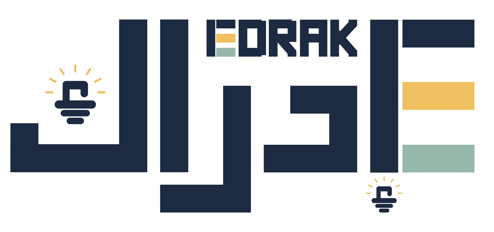

نبذة عن النادي
نادي إدراك هو نادٍ طلابي بجامعة المجمعة يُعنى بنشر الوعي، وتنمية مهارات الطلبة، وتعزيز الصحة النفسية، من خلال برامج وفعاليات ومبادرات نوعية تسهم في بناء طالب أكثر وعيًا وتوازنًا وقدرة على التطور والتأثير.
نحو وعيٍ يُدرك، وأثرٍ يُصنع.

الوقت المتبقي على الفعالية القادمة
نحو وعيٍ يُدرك، وأثرٍ يُصنع.
بيئة طلابية لتنمية المهارات، تعزيز الوعي، ودعم المبادرات والأفكار.
اكتشف النادي
نادي إدراك هو نادٍ طلابي بجامعة المجمعة يُعنى بنشر الوعي، وتنمية مهارات الطلبة، وتعزيز الصحة النفسية، من خلال برامج وفعاليات ومبادرات نوعية تسهم في بناء طالب أكثر وعيًا وتوازنًا وقدرة على التطور والتأثير.
نحو وعيٍ يُدرك، وأثرٍ يُصنع.
نحتفي بشغف وتميز أعضائنا المستمر.
وديان المطيري
رئيسة الإعلامداليا المطيري
نائبة الإعلاملجنة التصميم وكتابة المحتوى
ورود اليابسي
لجنة الإعلامالدكتور عمار العمار
تركي الشمري
وداد المطيري
حسين الاربش
سارا القحطاني
حيدر المرعي
عبدالله الشهري
عبدالله العتيبي
نور الزهيري
احمد حمد
جنى الماطر
علياء العتيبي
أسيل المغيرة
اسماء المطيري
وديان المطيري
داليا المطيري